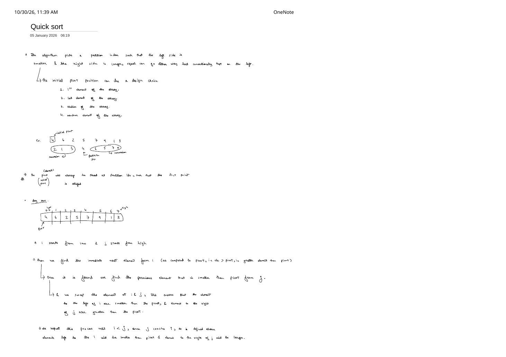
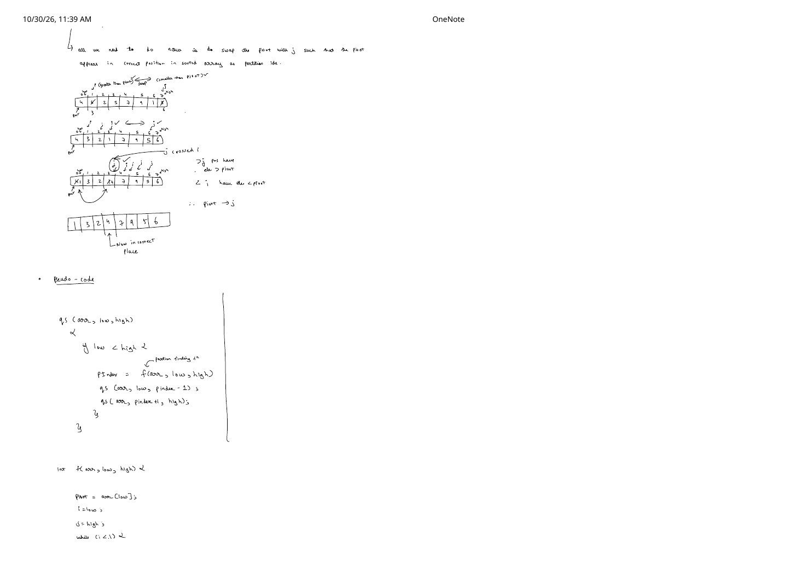
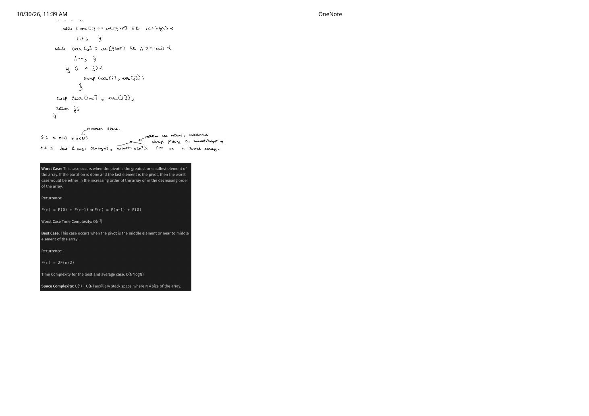

Quick Sort: Two-Pointer Pivot Partitioning & Recurrence Analysis
Expanded from handwritten competitive coding study note: 05_Quick_sort.pdf
Where Merge Sort divides effortlessly at the midpoint and pays $O(n)$ auxiliary memory during its bottom-up merge, Quick Sort inverts the divide-and-conquer workflow: it performs all ordering work top-down and in-place via partitioning around a pivot. Once the pivot lands at its exact sorted index pIndex—with all elements $\le \text{pivot}$ to its left and all elements $\gt \text{pivot}$ to its right—recursively sorting the left and right subarrays finishes the entire sort with zero merge step and $O(1)$ extra array memory!
1. Four Pivot Design Choices & Partition Invariant (Page 1)
Page 1 opens by defining the partition goal—place the chosen pivot at pIndex so every element on the left is smaller (conventionally $\le \text{pivot}$ so duplicates stay consistently on one side) and every element on the right is strictly larger ($\gt \text{pivot}$)—and lists the four classic choices for the initial pivot:
- 1st element of the subarray (
arr[low]— used in the handwritten dry run below) - Last element of the subarray (
arr[high]— used in Lomuto's partition) - Median of the subarray (in practice approximated in $O(1)$ by median-of-three: median of
arr[low],arr[mid],arr[high]) - Random element of the subarray (
arr[low + rand() % (high - low + 1)]— defeats adversarial sorted/reverse-sorted inputs!)
Two-Pointer Partition Invariant (pivot = arr[low])
Starting with i = low and j = high while i < j:
- Advance
irightwards past elements $\le \text{pivot}$ untilarr[i] > pivot(first misplaced large element on the left). - Move
jleftwards past elements $\gt \text{pivot}$ untilarr[j] <= pivot(first misplaced small/equal element on the right). - If
i < j, swaparr[i]andarr[j]. Throughout execution, every index in[low..i - 1]holds $\le \text{pivot}$ and every index in[j + 1..high]holds $\gt \text{pivot}$!
05_Quick_sort.pdf: swapping arr[low] with arr[j] puts 1 <= 4 at index 0 and locks 4 at index 3.2. Detailed Dry Run & Why We Swap Pivot With j (Not i!)
Let's trace arr = [4, 6, 2, 5, 7, 9, 1, 3] (Pages 1–2) and answer the #1 interview question about this partition scheme:
Why Must arr[low] Swap With arr[j] Upon Crossing? (Page 2)
When the outer loop terminates because j has crossed i ($j \lt i$, specifically $j = 3, i = 4$ on [4, 3, 2, 1, 7, 9, 5, 6]):
- Every position strictly to the right of
j($4, 5, 6, 7$) was already rejected byjbecause its element is $\gt \text{pivot}$. - Every position strictly to the left of
i($0, 1, 2, 3$)—which includesj = 3—holds an element $\le \text{pivot}$! - Because the pivot currently sits on the left end at
arr[low], whatever replacesarr[low]will stay in the left partition! Swappingarr[low]witharr[i](7) would illegally dump7 > 4at index $0$. Swappingarr[low]witharr[j](1 <= 4) places a guaranteed $\le \text{pivot}$ element at index $0$ and lockspivot = 4atpIndex = j = 3!
After returning pIndex = 3, quickSort recurses on left slice [1, 3, 2] (indices $0 \dots 2$) and right slice [7, 9, 5, 6] (indices $4 \dots 7$).
3. Production-Safe C++ Implementation & Inner-Loop Bounds Guard
Looking closely at the handwritten pseudocode across the bottom of Page 2 and top of Page 3 reveals two crucial C++ engineering details:
- Value vs. Index of
pivot: Page 2 stores the valueint pivot = arr[low];, so the inner loops must comparearr[i] <= pivotandarr[j] > pivot(on Page 3 top,arr[pivot]was accidentally written by slip of the pen—comparing against the valuepivotdirectly is what's intended!). - Preventing Out-of-Bounds Increments (
i <= high - 1&j >= low + 1): Supposepivotis the largest element in[low..high](e.g.,[9, 1, 2, 3]). If the inner condition werearr[i] <= pivot && i <= high, then when $i = \text{high}$,++iincrements $i$ to $\text{high} + 1$, and the very next check evaluatesarr[high + 1]out-of-bounds before checkingi <= high! Guardingi <= high - 1(placed beforearr[i], or letting $i$ stop safely at $\text{high}$) andj >= low + 1guaranteesistays in[low..high]andjstays in[low..high]without ever reading outside the subarray!
#include <cstdlib>
#include <utility>
#include <vector>
// 1. Handwritten Two-Pointer Partition (pivot at low, Pages 2-3) — bounds-safe C++
int partitionTwoPointer(std::vector<int>& arr, int low, int high) {
int pivot = arr[low];
int i = low;
int j = high;
while (i < j) {
// Check index bound FIRST (short-circuit), and stop at high / low!
while (i <= high - 1 && arr[i] <= pivot) {
++i;
}
while (j >= low + 1 && arr[j] > pivot) {
--j;
}
if (i < j) {
std::swap(arr[i], arr[j]);
}
}
std::swap(arr[low], arr[j]); // Place pivot at its exact sorted index j
return j;
}
// 2. Randomized wrapper — defeats O(n^2) worst case on sorted / reverse-sorted inputs!
int partitionRandomized(std::vector<int>& arr, int low, int high) {
int randIdx = low + std::rand() % (high - low + 1);
std::swap(arr[low], arr[randIdx]);
return partitionTwoPointer(arr, low, high);
}
void quickSort(std::vector<int>& arr, int low, int high) {
if (low < high) {
int pIndex = partitionTwoPointer(arr, low, high);
quickSort(arr, low, pIndex - 1);
quickSort(arr, pIndex + 1, high);
}
}4. Balanced vs. Degenerate Recurrence Relations (Page 3)
Unlike Merge Sort—whose midpoint split is always $n/2 + n/2$—Quick Sort's recursion tree shape depends entirely on where pIndex lands:
Best, Average & Worst-Case Complexity Proofs
- Best Case — Balanced Midpoint Splits ($\mathbf{\Theta(n \log n)}$): When the pivot lands at or near the median of each subarray, both subproblems have size $\approx n / 2$ while partitioning scans $n$ elements in $\Theta(n)$: $$F(n) = 2F(n / 2) + \Theta(n) \implies F(n) = \mathbf{\Theta(n \log n)}.$$
- Average Case — Random Input or Random Pivot ($\mathbf{\Theta(n \log n)}$): Even a skewed $10\% / 90\%$ constant-fraction split has recursion depth $\log_{10/9} n = O(\log n)$ with $\le n$ total partition work per depth! Averaging over all $n!$ permutations (or random pivot choices) gives $\approx 2n \ln n \approx 1.39\,n \log_2 n$ comparisons $\implies \mathbf{\Theta(n \log n)}$.
- Worst Case — Sorted or Reverse-Sorted Array With Extremal Pivot ($\mathbf{\Theta(n^2)}$): If we deterministically pick the 1st or last element as pivot on an already increasing or decreasing array, the pivot is always the minimum or maximum of the subarray, leaving $0$ elements on one side and $n - 1$ on the other: $$F(n) = F(0) + F(n - 1) + \Theta(n) = \Theta(n) + \Theta(n - 1) + \dots + \Theta(1) = \frac{n(n + 1)}{2} = \mathbf{\Theta(n^2)}.$$
- Space Complexity (Page 3):
• Extra Heap/Array Space: $\mathbf{O(1)}$ (in-place partitioning!).
• Auxiliary Call-Stack Space: $\mathbf{O(\log n)}$ in best/average cases, degrading to $\mathbf{O(n)}$ stack frames in the skewed worst case (which can be guaranteed $O(\log n)$ worst-case stack space by recursing on the smaller partition first and tail-looping on the larger one!).
| Property | Verdict | Why Quick Sort Often Beats Merge Sort in RAM |
|---|---|---|
| In-Place? | Yes | Zero $O(n)$ temp allocations or array-to-buffer copies; sequential two-pointer scans have phenomenal CPU cache locality. |
| Stable? | No | Long-range swaps between arr[i] and arr[j] (and the final swap arr[low] <-> arr[j]) reorder equal elements. |
| Worst-Case Guard | Randomize + 3-Way | Random pivot defeats sorted inputs; 3-way Dutch National Flag partitioning (< pivot, == pivot, > pivot) defeats all-equal inputs! |
5. Key Edge Cases & Competitive Programming Traps
- All-Equal Elements (
[5, 5, 5, 5, 5]) Trap! Look closely at what happens on $n$ identical elements whenarr[i] <= pivotadvancesiall the way tohigh:jstays athigh($5 \not\gt 5$),pIndexreturnshigh, and the recursion splits into $n - 1$ and $0$—degenerating to $\Theta(n^2)$ even with a random pivot! In contests with heavy duplicates, either use strict-crossing Hoare (where both pointers stop on== pivotand swap, splitting 50/50!) or 3-way Dutch National Flag Quick Sort (which finishes all-equal arrays in $O(n)$!). - Stack Overflow on $n = 10^5$ Sorted Input: Unrandomized 1st-element Quick Sort on $n = 10^5$ sorted integers makes $10^5$ nested calls ($\approx 5 \times 10^9$ operations + stack overflow). Always randomize the pivot (or use C++
std::sort's Introsort, which falls back to Heap Sort past depth $2\lfloor\log_2 n\rfloor$).
From the Handwritten Notes
View original handwritten page — Quick Sort Page 1: 4 Pivot Choices & Two-Pointer Invariant Setup


05_Quick_sort.pdf: partition definition, four pivot selection strategies, and setting up pointers i = low and j = high on [4, 6, 2, 5, 7, 9, 1, 3].View original handwritten page — Quick Sort Page 2: Pointer Crossing Diagram, Swapping Pivot With j & qs Pseudocode


05_Quick_sort.pdf: swaps (6, 3) and (5, 1), why j crossing i proves pivot swaps with j, and recursive qs(arr, low, high) code.View original handwritten page — Quick Sort Page 3: Partition Loop Completion & Worst vs. Best Recurrences


05_Quick_sort.pdf: finishing partition function f(arr, low, high), $O(n^2)$ unbalanced recurrence $F(n) = F(0) + F(n - 1)$ on sorted arrays, and $O(n \log n)$ balanced recurrence $F(n) = 2F(n / 2)$.